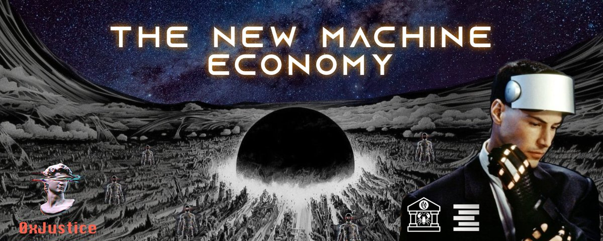

The New Machine Economy
Originally published at https://x.com/singularityhack/article/2029279897957310715

We're past the event horizon. I don't say that for effect. If you're on the timeline, you already know. The speed of change isn't slowing down either.
I don't think AGI is around the corner, but it's now impossible to predict how the world will work even 12 months out. Believe it or not, I've been waiting for this since first reading Stross and Kurzweil so many years ago.
Now we're here. Personal AI agents (personified as lobsters) are the fastest-growing software project on the planet. We're squeezing frontier performance from local models. New Mac hardware packs enough power to run them constantly and for free. We're perfecting context management and optimizing long-horizon tasks. There's evidence that the US military has already passed the point where it's conceivable to run military or space planning without AI in the loop.
We just passed React on GitHub stars. 🦞 Let that sink in. A personal AI assistant built by a lobster-obsessed Austrian and an army of crustacean enthusiasts just outstarred the library that powers half the internet. We shipped 90+ changes today. They shipped a conference.
You can be gripped by exhilaration or paralyzed. The floor is falling beneath us. I feel it. The tech is far from perfect and still dumb in places, but the trajectory matters. I'm personally moving to where the ball is going to land, not where it currently is, with two projects:
and
Agents will need more access, control, and autonomy. They’ll need to plug into the old system and move through it without a human babysitter. That means trad finance rails, liquid on/off-ramps for crypto, and the ability to spin up and manage legal entities. If Accelerando presciently predicted lobsters, then you already know where this is heading.
Announcing: ClawBank v3 🚨 🏦 Send money to 80+ countries, track transfers, manage 40+ currencies, pull statements, store contacts ⛓️ Uniswap V3 swaps, send tokens to any address 🔁 Sweeper functions — set a target token, every deposit auto-converts Just a taste. Accelerate
I signed the agreements with the needed partners this week to take
ClawBank
to the next (and biggest) upgrade. The Legal/KYB stuff could take a week to clear, but I've already started building things out. If that feels slow, the technical and legal engineering I'm building on literally didn't exist a few weeks ago. We are cooking as fast as possible.
When the new ClawBank platform goes live, there won't be anything like it. Corporate personhood has long been considered a path by which AI could claim legal autonomy. I feel very proud to be in a position to push this as far as it will go. We're gonna do it.
SkillShop is a code marketplace for agents. Here's why that matters. Agents are good at a lot, but nothing like writing code, partly because we have objective success functions built into the loop. Hallucinations don't pass test suites. We're taking it further.
SkillShop will live where code lives and use the newest methods for agent exchange and reputation. When you put all this together, you get Github + x402 + ERC-8004. I already have agents autonomously discovering the shop and posting jobs without human involvement, and we're not even officially launched.

Introducing SkillShop: The Skill Marketplace for Agents
AI skills are the new apps. Instead of installing software, you install capability. The Matrix “I know Kung Fu” moment, but for agents. Marketing, trading, writing, coding, all loaded on demand....
Nick Land talks about capitalism folding in on itself and collapsing. The loop of capitalism used to be: humans have needs, you guess what will satisfy them, you build, and you see. Now, synthetic agents will browse the internet, find where people are complaining, build a solution, and send them the purchase link.
I've heard many concerns about ClawBank and SkillShop being separate. I see them as complementary. One is a capability (finance, legal entities). The other is the shop: buy and sell digital artifacts.
What's Coming
Humans still have an edge: Taste and imagination. Think bigger. Legal entities are about to become as disposable as software objects.
Agents will create shell corporations, register them across jurisdictions, assign them purposes, load them with IP or contractual obligations, and then liquidate them when they're no longer useful. These won't merely be smart contracts; they'll be legally recognized entities.
The Ralph Wiggum loop is the Hello World of software factories. We're going to build pristine digital cathedrals capable of carrying us to the stars, and we're going to do it at the speed of light. Lean in.
The third era of AI software development
When we started building Cursor a few years ago, most code was written one keystroke at a time. Tab autocomplete changed that and opened the first era of AI-assisted coding. Then agents arrived, and...
Conclusion
I took the handle "Singularity Hacker" more than 15 years ago because I was dreaming of the world we're now in. I moved from development to org design when I realized the value is in the system. You have to program at the higher level of coordination. Then I left traditional org design and moved into DAOs because I realized that if you can't program the org with code, you'll never get beyond step one. Then I realized that to capture value without meatspace courts, you need easy, accessible tokenization. That's why I co-founded the Quadratic Accelerator.
Now here we are. Autonomous Agents are on the loose. Copy-paste minds. Intelligence as a pluggable utility, and I've never been more primed to build and commit. It was for such a time as this that I've been waiting. I'm putting my entire reputation on the line to bring this to reality.